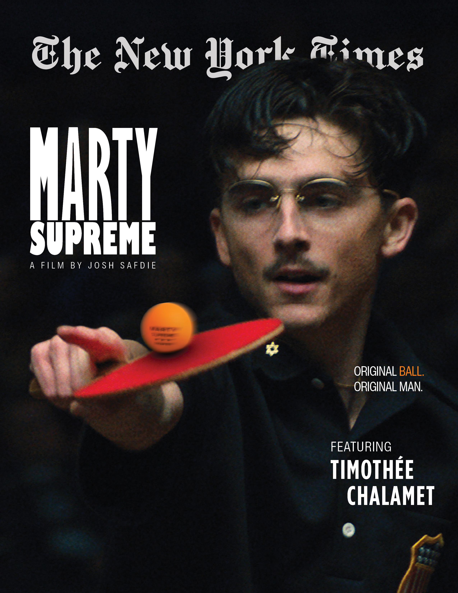

Magazine

The challenge was to design a magazine cover for a prestige film that felt bold and cinematic without relying on visual clutter. The goal was to communicate obsession and originality through typography, hierarchy, and restraint rather than effects or decoration.
Key Design Focus
Layout & Visual Decisions
The layout prioritises typographic hierarchy to establish a clear reading order, with the title
weighted heavily on the left to anchor the composition. Supporting information is positioned
to reinforce the title rather than compete with it, allowing the image to remain dominant.
The ping pong ball is introduced as a symobolic focal point, representing precision and originality, and
serves as the primary colour accent on the cover. Its orange tone is intentionally echoed in
select typographic elements to create cohesion and guide attention without overwhelming the composition.